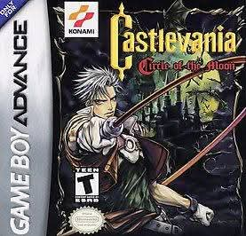

Castlevania: Circle of the Moon
GBA · ภาษาไทย v1.0
แพตช์ภาษาไทยโดยเพจแปลเกมเก่า ใช้ฟอนต์ไทย 8×8 สำหรับข้อความในเกม เลือก ROM ต้นฉบับแล้วสร้างไฟล์ภาษาไทยในเบราว์เซอร์ได้ทันที
ROM ต้นฉบับที่รองรับ
Castlevania: Circle of the Moon รุ่นยุโรป (E) รหัสเกม AAMP ขนาด 8 MB เท่านั้น
ระบบตรวจ SHA-256 ของไฟล์ก่อนแปะ ใช้กับ ROM รุ่นอื่นไม่ได้
Castlevania: Circle of the Moon รุ่นยุโรป (E) รหัสเกม AAMP ขนาด 8 MB เท่านั้น
ระบบตรวจ SHA-256 ของไฟล์ก่อนแปะ ใช้กับ ROM รุ่นอื่นไม่ได้
- เลือก ROM ต้นฉบับ .gba ของคุณ
- กด “สร้างไฟล์ภาษาไทย” ระบบแปะแพตช์ในเครื่องคุณ
- ดาวน์โหลดไฟล์ .gba ภาษาไทยและเปิดในอีมูเลเตอร์
ไฟล์ ROM ไม่ถูกอัปโหลดขึ้นเว็บ
กำลังโหลดแพตช์…
ขอบเขตรุ่นนี้
แปลข้อความบางส่วนแล้ว แต่ยังมีข้อความภาษาอังกฤษและจุดแสดงฟอนต์ในเมนูที่ต้องตรวจแก้เพิ่มเติม รุ่นนี้ยังไม่ได้ทดสอบเล่นจบเกม
แปลข้อความบางส่วนแล้ว แต่ยังมีข้อความภาษาอังกฤษและจุดแสดงฟอนต์ในเมนูที่ต้องตรวจแก้เพิ่มเติม รุ่นนี้ยังไม่ได้ทดสอบเล่นจบเกม
ค่า SHA-256 สำหรับตรวจสอบ
ต้นฉบับ
ไฟล์ไทย v1.0